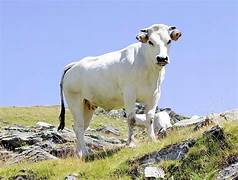
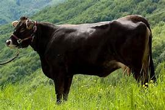
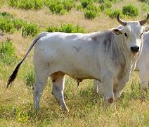

Le razze da lavoro comprendevano bovini particolarmente adatti al traino di carri e di attrezzi agricoli per il notevole sviluppo delle masse muscolari; soppiantati dalla meccanizzazione agricola (almeno nei paesi occidentali) sono ora riconvertiti con notevoli risultati alla produzione di carne; nel sud del mondo i bovini vengono tuttora utilizzati per il lavoro agricolo e per i trasporti e per questo molti studi mirano a creare attrezzi agricoli a trazione animale sempre più efficienti.
Nata come razza utilizzata dai contadini italiani anche per la lavorazione dei campi, questa sua terza attitudine viene gradualmente a perdersi nel dopoguerra grazie all'invenzione dei trattori e dei mezzi agricoli e sarà allevata solo per la produzione di latte e carne. Gradualmente è stata sostituita con capi che garantiscano una maggiore produzione, facendo diminuire sensibilmente il numero di capi (nel 1994 se ne contavano 750 tra le province di Modena e Reggio Emilia).[3] Per tale motivo la FAO ha inserito tale capo tra gli animali a rischio estinzione, pur rilevando come sia in atto un programma per invertire tale tendenza.[3] In provincia di Modena è nato nel 2006 un consorzio di allevatori e caseifici per la preservazione della razza e la produzione di Parmigiano-Reggiano in purezza, che a fronte di un prezzo più elevato presenta migliori caratteristiche organolettiche ed una conservabilità decisamente maggiore. Alcuni allevatori conferiscono assieme a quello di altre razze più diffuse anche il pregiato latte di Bianca, con produzione giornaliera limitata (18-25 litri) ma di alta qualità proteica e rapporto proteine-grassi ideale, a caseifici che lo utilizzano assieme per migliorare le caratteristiche del formaggio. A parziale vantaggio della Bianca Modenese va aggiunto che ogni capo resta in lattazione mediamente diversi anni più a lungo delle altre razze comunementi utilizzate perché più efficienti (fino a 40/50 litri/die). Il Parmigiano-Reggiano di Bianca Modenese è prodotto ora ad una media di 10 forme/die da tre caseifici, due in alto Appennino ed uno (non associato ufficialmente al Consorzio) nella Pedemontana. Una vicenda simile ma con esiti produttivi e commerciali migliori è quella del Parmigiano-Reggiano prodotto con latte di Vacca Rossa Reggiana.
Nata come razza utilizzata dai contadini italiani anche per la lavorazione dei campi, questa sua terza attitudine viene gradualmente a perdersi nel dopoguerra grazie all'invenzione dei trattori e dei mezzi agricoli e sarà allevata solo per la produzione di latte e carne. Gradualmente è stata sostituita con capi che garantiscano una maggiore produzione, facendo diminuire sensibilmente il numero di capi (nel 1994 se ne contavano 750 tra le province di Modena e Reggio Emilia).[3] Per tale motivo la FAO ha inserito tale capo tra gli animali a rischio estinzione, pur rilevando come sia in atto un programma per invertire tale tendenza.[3] In provincia di Modena è nato nel 2006 un consorzio di allevatori e caseifici per la preservazione della razza e la produzione di Parmigiano-Reggiano in purezza, che a fronte di un prezzo più elevato presenta migliori caratteristiche organolettiche ed una conservabilità decisamente maggiore. Alcuni allevatori conferiscono assieme a quello di altre razze più diffuse anche il pregiato latte di Bianca, con produzione giornaliera limitata (18-25 litri) ma di alta qualità proteica e rapporto proteine-grassi ideale, a caseifici che lo utilizzano assieme per migliorare le caratteristiche del formaggio. A parziale vantaggio della Bianca Modenese va aggiunto che ogni capo resta in lattazione mediamente diversi anni più a lungo delle altre razze comunementi utilizzate perché più efficienti (fino a 40/50 litri/die). Il Parmigiano-Reggiano di Bianca Modenese è prodotto ora ad una media di 10 forme/die da tre caseifici, due in alto Appennino ed uno (non associato ufficialmente al Consorzio) nella Pedemontana. Una vicenda simile ma con esiti produttivi e commerciali migliori è quella del Parmigiano-Reggiano prodotto con latte di Vacca Rossa Reggiana.
La Calvana, localmente chiamata Calvanina, è una razza bovina minore italiana, autoctona della Toscana, allevata principalmente sulle aree collinari e montuose del Appennino Tosco-Emiliano tra le province di Firenze e Prato, in particolare sui Monti della Calvana del cui territorio è originaria. Negli ultimi anni bovini di razza Calvana sono presenti anche in alcuni allevamenti delle province di Pistoia e di Siena, al di fuori dell'areale primario. Mentre in passato i bovini di razza Calvana venivano utilizzati prevalentemente per lavoro, nel corso degli ultimi decenni è stata riscoperta come una razza di buon adattamento al pascolo da cui è possibile produrre carni pregiate.
